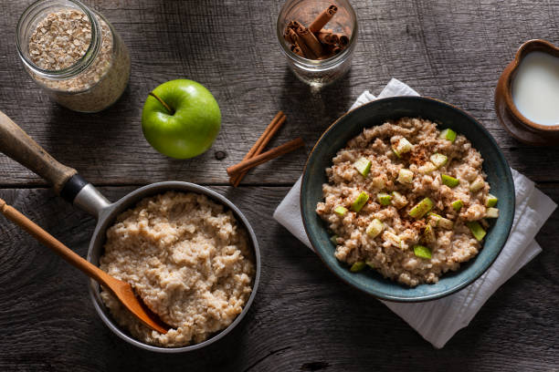

Apple Cinnamon Oats

Description
Cinnamon oats are a perfect snack that can be prepared overnight for a quick breakfast come morning time.
Ingredients
- Old fashioned oats
- Cinnamon
- Salt
- Half of a medium apple (green)
- Unsweet vanilla almond milk
- Sugar free maple syrup
- Greek yogurt
Steps
- Mix together 2/3 cup of old fashioned oats
- 1 tsp cinnamon
- A pinch of Salt
- Half of a green apple, peeled and diced
- 3/4 cup of unsweet almond milk
- 3 tbsp sugar free maple syrup
- 1/2 cup greek yogurt
- Seal container, let sit in refrigerator overnight
- Enjoy!
Back